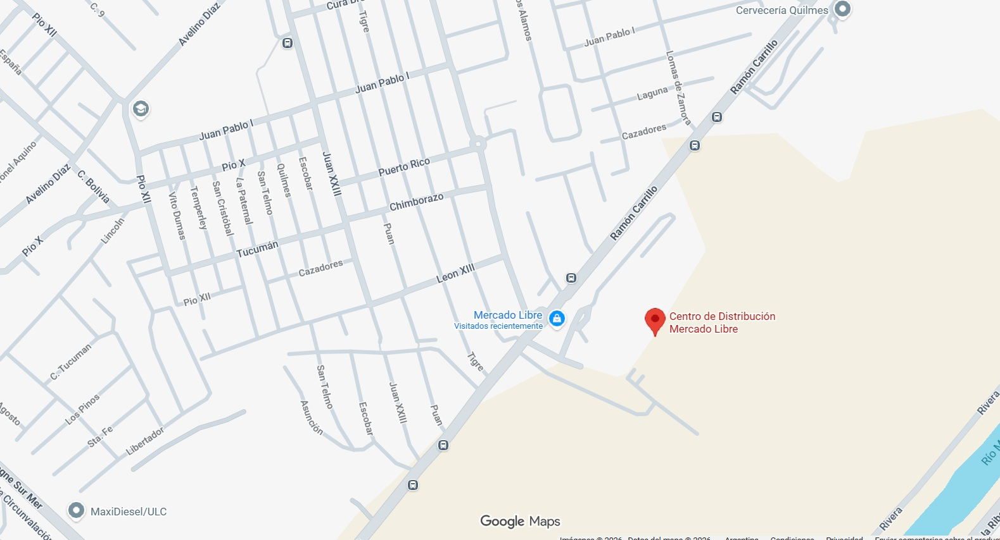

La empresa Mercado Libre se dedica principalmente al comercio electrónico, funcionando como una plataforma digital que conecta compradores y vendedores para realizar operaciones de compra y venta de productos y servicios a través de internet. Además, ofrece soluciones de pago mediante su sistema de billetera virtual, servicios de envío y logística para la entrega de productos, financiamiento a usuarios y comerciantes, y herramientas de publicidad y creación de tiendas online. De esta manera, se posiciona como una de las principales empresas tecnológicas y financieras de América Latina.
Logistica (preparación y gestion de pedidos)= Durante mi trabajo en Mercado Libre me desempeñé en el área de logística, principalmente en la gestión y preparación de pedidos dentro del centro de distribución. Mis tareas incluían la recepción de productos, su correcta ubicación en el depósito y el control de stock.
